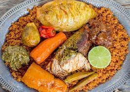

Chep
west african fried rice with vegtables and fish

National dish of Senegal and is comprised of stewed broken jasmine rice and vegetables served with marinated fish.
Ingredients
- 2 cups of broken jasmine rice or regular jasmine rice
- 1 sweet potato
- 4 carrots I used orange purple and yellow carrots
- 1/2 a head of cabbage
- 2 bell peppers
- 3 scotch bonnet/ habanero peppers
- 1 cup vegetable oil
- 1 cup tomato paste
- 1 large onions sliced
- 3 cloves of garlic
- 3 tablespoon of shrimp bouillon
Steps
- With a mortar and pistol or in a food processor, grind the parsley, garlic, scotch bonnet, bullion black pepper and salt into a rough paste.
- Poke two holes into the flesh of the fish and stuff them with the parsley mix.
- Broil or Fry the fish until it is golden brown on each side, and set aside for the sauce.
- In a mortar and with a pestle or in a food processor grind the scotch bonnet peppers and garlic into a rough paste
- Saute the sliced onions in the oil over medium heat until translucent
- Add in the tomato paste, and stir fry for 5 minutes. The tomato paste may start to brown a little.
- Add in the ground garlic and scotch bonnet and stir fry for another 2 minutes
- Add in bullion, black pepper, and 8 cups of water. At this stage, taste the sauce for salt, and adjust to your preference